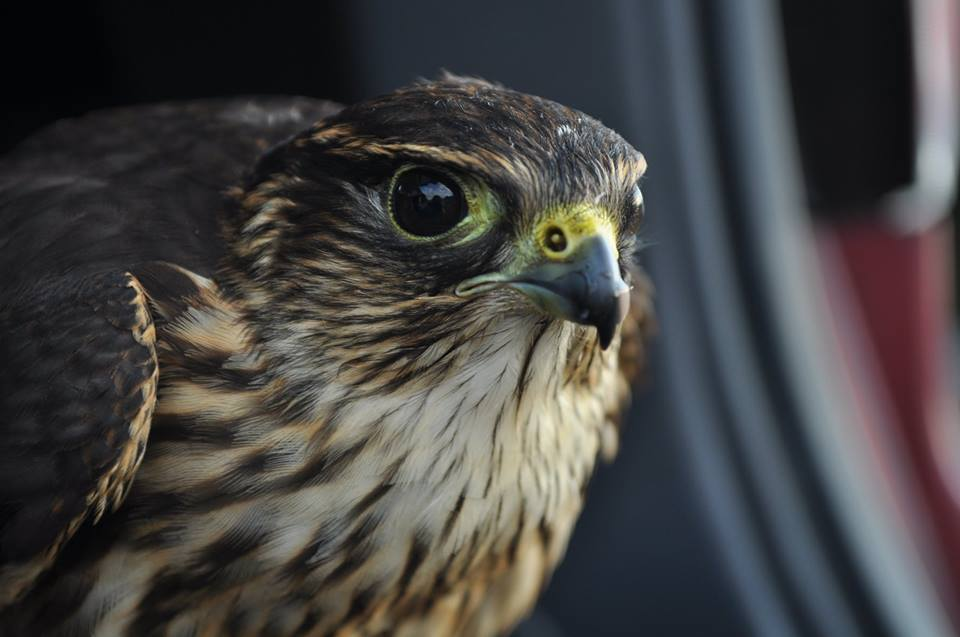

Falconry Laws and Regulations
Falconry is a highly regulated sport by USFWS, and each state's Fish and Wildlife Department. Click here to learn more about Ohio's falconry reguatlions.
Equipment and Housing
Apprentices are required to build their own housing and equipment. Learn more about what's needed in the sport of falconry.
Ohio Falconry Mission
Promoting the hunting tradtion of falconry.


"Hunt hard, kill swiftly, waste nothing, offer no apologies." - Teddy Moritz/Unknown Origin